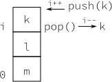

Learning Go

Introduction
Is Go an object-oriented language? Yes and no.
The Go programming language is an open source project language to make programmers more productive.
According to the website “Go is expressive, concise, clean, and efficient”. And indeed it is. My initial interest was piqued when I read early announcements about this new language that had built-in concurreny and a C-like syntax (Erlang also has built-in concurrency, but I could never get used to its syntax). Go is a compiled statically typed language that feels like a dynamically typed, interpreted language. My go to (scripting!) language Perl has taken a back seat now that Go is around.
The unique Go language is defined by these principles:
- Clean and Simple
- Go strives to keep things small and beautiful. You should be able to do a lot in only a few lines of code.
- Concurrent
- Go makes it easy to “fire off” functions to be run as very lightweight threads. These threads are called goroutines 1 in Go.
- Channels
- Communication with these goroutines is done, either via shared state or via channels .
- Fast
- Compilation is fast and execution is fast. The aim is to be as fast as C. Compilation time is measured in seconds.
- Safe
- Explicit casting and strict rules when converting one type to another. Go has garbage
collection. No more
free()in Go: the language takes care of this. - Standard format
- A Go program can be formatted in (almost) any way the programmers want, but an official format
exists. The rule is very simple: The output of the filter
gofmtis the officially endorsed format. - Postfix types
- Types are given after the variable name, thus
var a int, instead ofint a. - UTF-8
- UTF-8 is everywhere, in strings and in the program code. Finally you can use $$\Phi = \Phi
- 1$$ in your source code.
- Open Source
- The Go license is completely open source.
- Fun
- Programming with Go should be fun!
As I mentioned Erlang also shares some features of Go. A notable difference between Erlang and Go is that Erlang borders on being a functional language, while Go is imperative. And Erlang runs in a virtual machine, while Go is compiled.
How to Read this Book
I’ve written this book for people who already know some programming languages and how to program. In order to use this book, you (of course) need Go installed on your system, but you can easily try examples online in the Go playground2. All exercises in this book work with Go 1, the first stable release of Go – if not, it’s a bug.
The best way to learn Go is to create your own programs. Each chapter therefore includes exercises (and answers to exercises) to acquaint you with the language. Each exercise is either easy, intermediate, or difficult. The answers are included after the exercises on a new page. Some exercises don’t have an answer; these are marked with an asterisk.
Here’s what you can expect from each chapter:
- We’ll look at the basic types, variables, and control structures available in the language.
- Here we look at functions, the basic building blocks of Go programs.
- We’ll see that functions and data can be grouped together in packages. We’ll also see how to document and test our packages.
- We’ll create our own types. We’ll also look at memory allocations in Go.
- We’ll learn how to use interfaces. Interfaces are the central concept in Go, as Go does not support object orientation in the traditional sense.
- We’ll learn the
gokeyword, which can be used to start function in separate routines (called goroutines). Communication with those goroutines is done via channels. - Finally we’ll see how to interface with the rest of the world from within a Go program. We’ll see how to create files and read and write to and from them. We’ll also briefly look into networking.
Official Documentation
There is a substantial amount of documentation written about Go. The Go Tutorial , the Go Tour (with lots of exercises) and the Effective Go are helpful resources. The website http://golang.org/doc/ is a very good starting point for reading up on Go3. Reading these documents is certainly not required, but it is recommended.
When searching on the internet use the term “golang” instead of plain “go”.
Go comes with its own documentation in the form of a program called godoc4. If you are
interested in the documentation for the built-ins, simply do this:
% godoc builtin
To get the documentation of the hash package, just:
% godoc hash
To read the documentation of fnv contained in hash, you’ll need to issue godoc hash/fnv as
fnv is a subdirectory of hash.
PACKAGE DOCUMENTATION
package fnv
import "hash/fnv"
Package fnv implements FNV-1 and FNV-1a, non-cryptographic hash
...
Basics
I am interested in this and hope to do something.
In this chapter we will look at the basic building blocks of the Go programming language.
Hello World
In the Go tutorial, you get started with Go in the typical manner: printing “Hello World” (Ken Thompson and Dennis Ritchie started this when they presented the C language in the 1970s). That’s a great way to start, so here it is, “Hello World” in Go.
package main 1
import "fmt" 2 // Implements formatted I/O.
/* Print something */ 3
func main() { 4
fmt.Printf("Hello, world.") 5
}
Lets look at the program line by line. This first line is just required 1. All
Go files start with package <something>, and package main is required for
a standalone executable.
import "fmt" says we need fmt in addition to main 2. A package other
than main is commonly called a library, a familiar concept in many programming
languages (see ). The line ends with a comment that begins with //.
Next we another comment, but this one is enclosed in /* */ 3. When your Go
program is executed, the first function called will be main.main(), which
mimics the behavior from C. Here we declare that function 4.
Finally we call a function from the package fmt to print a string to the
screen. The string is enclosed with " and may contain non-ASCII characters
5.
Compiling and Running Code
To build a Go program, use the go tool.
To build helloworld we just enter:
% go build helloworld.go
This results in an executable called helloworld.
% ./helloworld
Hello, world.
You can combine the above and just call go run helloworld.go.
Variables, Types and Keywords
In the next few sections we will look at the variables, basic types, keywords, and control structures of our new language.
Go is different from (most) other languages in that the type of a variable is
specified after the variable name. So not: int a, but a int. When you
declare a variable it is assigned the “natural” null value for the type. This
means that after var a int, a has a value of 0. With var s string, s is
assigned the zero string, which is "". Declaring and assigning in Go is a two
step process, but they may be combined. Compare the following pieces of code
which have the same effect.
var a int a := 15
var b bool b := false
a = 15
b = false
On the left we use the var keyword to declare a variable and then assign
a value to it. The code on the right uses := to do this in one step (this form
may only be used inside functions). In that case the variable type is
deduced from the value. A value of 15 indicates an int. A value of false
tells Go that the type should be bool. Multiple var declarations may also
be grouped; const (see ) and import also allow this. Note the
use of parentheses instead of braces:
var (
x int
b bool
)
Multiple variables of the same type can also be declared on a single line: var
x, y int makes x and y both int variables. You can also make use of
parallel assignment a, b := 20, 16.
This makes a and b both integer variables and assigns
20 to a and 16 to b.
A special name for a variable is _. Any value
assigned to it is discarded (it’s similar to /dev/null on Unix). In this
example we only assign the integer value of 35 to b and discard the value 34:
_, b := 34, 35. Declared but otherwise unused variables are a compiler error
in Go.
Boolean Types
A boolean type represents the set of boolean truth values denoted by the
predeclared constants true and false. The boolean type is bool.
Numerical Types
Go has most of the well-known types such as int. The int type has the
appropriate length for your machine, meaning that on a 32-bit machine it is 32
bits and on a 64-bit machine it is 64 bits. Note: an int is either 32 or 64
bits, no other values are defined. Same goes for uint, the unsigned int.
If you want to be explicit about the length, you can have that too, with
int32, or uint32. The full list for (signed and unsigned) integers is
int8, int16, int32, int64 and byte, uint8, uint16, uint32,
uint64, with byte being an alias for uint8. For floating point values
there is float32 and float64 (there is no float type). A 64 bit integer or
floating point value is always 64 bit, also on 32 bit architectures.
Note that these types are all distinct and assigning variables which mix these types is a compiler error, like in the following code:
package main
func main() {
var a int
var b int32
b = a + a
b = b + 5
}
We declare two different integers, a and b where a is an int and b is an
int32. We want to set b to the sum of a and a. This fails and gives the error:
cannot use a + a (type int) as type int32 in assignment. Adding the constant
5 to b does succeed, because constants are not typed.
Constants
Constants in Go are just that — constant. They are created at compile time,
and can only be numbers, strings, or booleans; const x = 42 makes x
a constant. You can use
iota 5 to enumerate values.
const (
a = iota
b
)
The first use of iota will yield 0, so a is equal to 0. Whenever iota is
used again on a new line its value is incremented with 1, so b has a value of 1.
Or, as shown here, you can even let Go repeat the use of iota. You may also
explicitly type a constant: const b string = "0". Now b is a string type
constant.
Strings
Another important built-in type is string. Assigning a string is as simple as:
s := "Hello World!"
Strings in Go are a sequence of UTF-8 characters enclosed in double quotes (“).
If you use the single quote (‘) you mean one character (encoded in UTF-8) —
which is not a string in Go.
Once assigned to a variable, the string cannot be changed: strings in Go are immutable. If you are coming from C, note that the following is not legal in Go:
var s string = "hello"
s[0] = 'c'
To do this in Go you will need the following:
s := "hello"
c := []rune(s) 1
c[0] = 'c' 2
s2 := string(c) 3
fmt.Printf("%s\n", s2) 4
Here we convert s to an array of runes 1. We change the first element of
this array 2. Then we create a new string s2 with the alteration 3.
Finally, we print the string with fmt.Printf 4.
Runes
Rune is an alias for int32. It is an UTF-8 encoded code point. When is this
type useful? One example is when you’re iterating over characters in
a string. You could loop over each byte (which is only equivalent to a character
when strings are encoded in 8-bit ASCII, which they are not in Go!). But to
get the actual characters you should use the rune type.
Complex Numbers
Go has native support for complex numbers. To use them you need a variable of
type complex128 (64 bit real and imaginary parts) or complex64 (32 bit real
and imaginary parts). Complex numbers are written as re + im$\(i\)\(, where `re`
is the real part, `im` is the imaginary part and \)\(i\)\( is the literal '\)\(i\)\('
(\)\(\sqrt{-1}\)$).
Errors
Any non-trivial program will have the need for error reporting sooner or later.
Because of this Go has a builtin type specially for errors, called error. var
e error creates a variable e of type error with the value nil. This error
type is an interface – we’ll look more at interfaces in . For
now you can just assume that error is a type just like all other types.
Operators and Built-in Functions
Go supports the normal set of numerical operators. See for lists the current ones and their relative precedence. They all associate from left to right.
| Precedence | Operator(s) |
|---|---|
| Highest | * / % << >> & &^ |
| `+ - | |
== != < <= > >= |
|
<- |
|
&& |
|
| Lowest | || |
+ - * / and % all do what you would expect, & | ^ and &^ are bit
operators for bitwise and bitwise
or bitwise xor and
bit clear respectively. The && and ||
operators are logical and and logical or Not listed in the table is the logical not !
Although Go does not support operator overloading (or method overloading for
that matter), some of the built-in operators are overloaded. For instance, +
can be used for integers, floats, complex numbers and strings (adding strings is
concatenating them).
Go Keywords
Let’s start looking at keywords, lists all the keywords in Go.
break |
default |
func |
interface |
select |
case |
defer |
go |
map |
struct |
chan |
else |
goto |
package |
switch |
const |
fallthrough |
if |
range |
type |
continue |
for |
import |
return |
var |
We’ve seen some of these already. We used var and const in the
section, and we briefly looked at package and import in our “Hello World”
program at the start of the chapter. Others need more attention and have their
own chapter or section:
funcis used to declare functions and methods.returnis used to return from functions. We’ll look at bothfuncandreturnin detail in .gois used for concurrency. We’ll look at this in .selectused to choose from different types of communication, We’ll work withselectin .interfaceis covered in .structis used for abstract data types. We’ll work withstructin .typeis also covered in .
Control Structures
There are only a few control structures in Go. To write loops we use the for
keyword, and there is a switch and of course an if. When working with
channels select will be used (see ). Parentheses are are not
required around the condition, and the body must always be brace-delimited.
If-Else
In Go an if looks like this:
if x > 0 {
return y
} else {
return x
}
Since if and switch accept an
initialization statement, it’s common to see one used to set up a (local)
variable.
if err := SomeFunction(); err == nil {
// do something
} else {
return err
}
It is idomatic in Go to omit the else when the if statement’s body has
a break, continue, return or, goto, so the above code would be better
written as:
if err := SomeFunction(); err != nil {
return err
}
// do something
The opening brace on the first line must be positioned on the same line as the
if statement. There is no arguing about this, because this is what gofmt
outputs.
Goto
Go has a goto statement - use it wisely. With goto you
jump to a label which must be defined within the current function.
For instance, a loop in disguise:
func myfunc() {
i := 0
Here:
fmt.Println(i)
i++
goto Here
}
The string Here: indicates a label. A label does not need to start with
a capital letter and is case sensitive.
For
The Go for loop has three forms, only one of which has
semicolons:
for init; condition; post { }- a loop using the syntax borrowed from C;for condition { }- a while loop, and;for { }- an endless loop.
Short declarations make it easy to declare the index variable right in the loop.
sum := 0
for i := 0; i < 10; i++ {
sum = sum + i
}
Note that the variable i ceases to exist after the loop.
Break and Continue
With break you can quit loops early. By itself, break
breaks the current loop.
for i := 0; i < 10; i++ {
if i > 5 {
break 1
}
fmt.Println(i) 2
}
Here we break the current loop 1, and don’t continue with the
fmt.Println(i) statement 2. So we only print 0 to 5. With loops within loop
you can specify a label after break to identify which loop to stop:
J: for j := 0; j < 5; j++ { 1
for i := 0; i < 10; i++ {
if i > 5 {
break J 2
}
fmt.Println(i)
}
}
Here we define a label “J” 1, preceding the for-loop there. When we use
break J 2, we don’t break the inner loop but the “J” loop.
With continue you begin the next iteration of the
loop, skipping any remaining code. In the same way as break, continue also
accepts a label.
Range
The keyword range can be used for loops. It can loop
over slices, arrays, strings, maps and channels (see ). range is an
iterator that, when called, returns the next key-value pair from the “thing” it
loops over. Depending on what that is, range returns different things.
When looping over a slice or array, range returns the index in the slice as
the key and value belonging to that index. Consider this code:
list := []string{"a", "b", "c", "d", "e", "f"}
for k, v := range list {
// do something with k and v
}
First we create a slice of strings. Then we use range to loop over them. With
each iteration, range will return the index as an int and the key as
a string. It will start with 0 and “a”, so k will be 0 through 5, and v will
be “a” through “f”.
You can also use range on strings directly. Then it will break out the
individual Unicode characters ^[In the UTF-8 world characters are sometimes
called runes Mostly, when people talk about characters, they
mean 8 bit characters. As UTF-8 characters may be up to 32 bits the word rune is
used. In this case the type of char is rune. and their start position, by
parsing the UTF-8. The loop:
for pos, char := range "Gő!" {
fmt.Printf("character '%c' starts at byte position %d\n", char, pos)
}
prints
character 'G' starts at byte position 0
character 'ő' starts at byte position 1
character '!' starts at byte position 3
Note that ő took 2 bytes, so ‘!’ starts at byte 3.
Switch
Go’s switch is very flexible; you can match on much
more than just integers. The cases are evaluated top to bottom until a match is
found, and if the switch has no expression it switches on true. It’s
therefore possible – and idiomatic – to write an if-else-if-else chain as
a switch.
// Convert hexadecimal character to an int value
switch { 1
case '0' <= c && c <= '9': 2
return c - '0' 3
case 'a' <= c && c <= 'f': 4
return c - 'a' + 10
case 'A' <= c && c <= 'F': 5
return c - 'A' + 10
}
return 0
A switch without a condition is the same as switch true 1. We list the
different cases. Each case statement has a condition that is either true of
false. Here 2 we check if c is a number. If c is a number we return its
value 3. Check if c falls between “a” and “f” 4. For an “a” we
return 10, for “b” we return 11, etc. We also do the same 5 thing for “A”
to “F”.
There is no automatic fall through, you can use fallthrough for that.
switch i {
case 0: fallthrough
case 1: 1
f()
default:
g() 2
f() can be called when i == 0 1. With default you
can specify an action when none of the other cases match. Here g() is called
when i is not 0 or 1 2. We could rewrite the above example as:
switch i {
case 0, 1: 1
f()
default:
g()
You can list cases on one line 1, separated by commas.
Built-in Functions
A few functions are predefined, meaning you don’t have to include any package to get access to them. lists them all.6
close |
new |
panic |
complex |
delete |
make |
recover |
real |
len |
append |
print |
imag |
cap |
copy |
println |
These built-in functions are documented in the builtin
pseudo package that is included in recent Go releases. Let’s go over these
functions briefly.
close- is used in channel communication. It closes a channel. We’ll learn more about this in .
delete- is used for deleting entries in maps.
lenandcap- are used on a number of different types,
lenis used to return the lengths of strings, slices, and arrays. In the next section we’ll look at slices, arrays and the functioncap. new- is used for allocating memory for user defined data types. See .
make- is used for allocating memory for built-in types (maps, slices, and channels). See .
copy,appendcopyis for copying slices. Andappendis for concatenating slices. See in this chapter.panic,recover- are used for an exception mechanism. See for more.
print,println- are low level printing functions that can be used without reverting to the
fmtpackage. These are mainly used for debugging. built-in,println) complex,real,imag- all deal with complex numbers. We will not use complex numbers in this book.
Arrays, Slices, and Maps
To store multiple values in a list, you can use arrays, or their more flexible
cousin: slices. A dictionary or hash type is also available. It is called
a map in Go.
Arrays
An array is defined by: [n]<type>, where $\(n\)$ is the length of the array and
<type> is the stuff you want to store. To assign or index an element in the
array, you use square brackets:
var arr [10]int
arr[0] = 42
arr[1] = 13
fmt.Printf("The first element is %d\n", arr[0])
Array types like var arr [10]int have a fixed size. The size is part of the
type. They can’t grow, because then they would have a different type. Also
arrays are values: Assigning one array to another copies all the elements. In
particular, if you pass an array to a function it will receive a copy of the
array, not a pointer to it.
To declare an array you can use the following: var
a [3]int. To initialize it to something other than zero, use a
composite literal a := [3]int{1, 2, 3}. This can
be shortened to a := [...]int{1, 2, 3}, where Go counts the elements
automatically.
When declaring arrays you always have to type something in between the square
brackets, either a number or three dots (...), when using a composite literal.
When using multidimensional arrays, you can use the following syntax: a :=
[2][2]int{ {1,2}, {3,4} }. Now that you know about arrays you will be delighted
to learn that you will almost never use them in Go, because there is something
much more flexible: slices.
Slices
A slice is similar to an array, but it can grow when new elements are added. A slice always refers to an underlying array. What makes slices different from arrays is that a slice is a pointer to an array; slices are reference types.
That means that if you assign one slice to another, both refer to the same
underlying array. For instance, if a function takes a slice argument, changes it
makes to the elements of the slice will be visible to the caller, analogous to
passing a pointer to the underlying array. With: slice := make([]int, 10), you
create a slice which can hold ten elements. Note that the underlying array isn’t
specified. A slice is always coupled to an array that has a fixed size. For
slices we define a capacity and a length
shows the creation of an array,
then the creation of a slice. First we create an array of $\(m\)$ elements of the
type int: var array[m]int .
Next, we create a slice from this array: slice := array[:n] . And now we have:
len(slice) == ncap(slice) == mlen(array) == cap(array) == m

Given an array, or another slice, a new slice is created via a[n:m]. This
creates a new slice which refers to the variable a, starts at index n, and
ends before index m. It has length n - m.
a := [...]int{1, 2, 3, 4, 5} 1
s1 := a[2:4] 2
s2 := a[1:5] 3
s3 := a[:] 4
s4 := a[:4] 5
s5 := s2[:] 6
s6 := a[2:4:5] 7
First we define 1 an array with five elements, from index 0 to 4.
From this we create 2 a slice with the elements from index 2 to 3, this slices contains: 3, 4.
Then we we create another slice 3 from a: with the elements from index 1 to 4,
this contains: 2, 3, 4, 5.
With a[:] 4 we create a slice with all the elements in the array. This is a shorthand for: a[0:len(a)].
And with a[:4] 5 we create a slice with the elements from index
0 to 3, this is short for: a[0:4], and gives us a slices that contains: 1, 2, 3, 4.
With s2[:] we create a slice from the slice s2 6, note that s5 still refers to the array a.
Finally, we create a slice with the elements from index 3 to 3 and also set the cap to 4 7.
When working with slices you can overrun the bounds, consider this code.
package main
func main() {
var array [100]int 1
slice := array[0:99] 2
slice[98] = 1 3
slice[99] = 2 4
}
At 1 we create an array with a 100 elements, indexed from 0 to 99. Then at 2
we create a slice that has index 0 to 98. We assign 1 to the 99th element 3 of
the slice. This works as expected. But at 4 we dare to do the impossible, and
and try to allocate something beyond the length of the slice and we are greeted
with a runtime error: Error: "throw: index out of range".
If you want to extend a slice, there are a couple of built-in functions that
make life easier: append and copy. The append function appends zero or more
values to a slice and returns the result: a slice with the same type as the
original. If the original slice isn’t big enough to fit the added values, append
will allocate a new slice that is big enough. So the slice returned by append
may refer to a different underlying array than the original slice does. Here’s
an example:
s0 := []int{0, 0}
s1 := append(s0, 2) 1
s2 := append(s1, 3, 5, 7) 2
s3 := append(s2, s0...) 3
At 1 we append a single element, making s1 equal to []int{0, 0, 2}. At 2
we append multiple elements, making s2 equal to []int{0, 0, 2, 3, 5, 7}. And
at 3 we append a slice, giving us s3 equal to []int{0, 0, 2, 3, 5, 7, 0, 0}.
Note the three dots used after s0...! This is needed make it clear
explicit that you’re appending another slice, instead of a single value.
The copy function copies slice elements from a source to a destination, and returns the number of elements it copied. This number is the minimum of the length of the source and the length of the destination. For example:
var a = [...]int{0, 1, 2, 3, 4, 5, 6, 7}
var s = make([]int, 6)
n1 := copy(s, a[0:]) 1
n2 := copy(s, s[2:]) 2
After 1, n1 is 6, and s is []int{0, 1, 2, 3, 4, 5}.
And after 2, n2 is 4, and s is []int{2, 3, 4, 5, 4, 5}.
Maps
Many other languages have a type similar to maps built-in. For instance, Perl
has hashes, Python has its dictionaries, and C++ also has maps (as part of the
libraries). In Go we have the map type. A map can be
thought of as an array indexed by strings (in its most simple form).
monthdays := map[string]int{
"Jan": 31, "Feb": 28, "Mar": 31,
"Apr": 30, "May": 31, "Jun": 30,
"Jul": 31, "Aug": 31, "Sep": 30,
"Oct": 31, "Nov": 30, "Dec": 31, 1
}
The general syntax for defining a map is map[<from type>]<to type>. Here, we
define a map that converts from a string (month abbreviation) to an int
(number of days in that month). Note that the trailing comma at 1 is
required.
Use make when only declaring a map: monthdays := make(map[string]int). A map
is a reference type.
For indexing (“searching”) the map, we use square brackets. For example, suppose
we want to print the number of days in December: fmt.Printf("%d\n",
monthdays["Dec"])
If you are looping over an array, slice, string, or map a, range clause will help you again, it returns the key and corresponding value
with each invocation.
year := 0
for _, days := range monthdays 1
year += days
}
fmt.Printf("Numbers of days in a year: %d\n", year)
At 1 we use the underscore to ignore (assign to nothing) the key returned by
range. We are only interested in the values from monthdays.
To add elements to the map, you would add new month with: monthdays["Undecim"]
= 30. If you use a key that already exists, the value will be silently
overwritten: monthdays["Feb"] = 29. To test for existence you would use the following: value, present := monthdays["Jan"].
If the key “Jan” exists, present will be true. It’s more Go like to name
present “ok”, and use: v, ok := monthdays["Jan"]. In Go we call this the
“comma ok” form.
You can remove elements from the map:
delete(monthdays, "Mar") 7. In general the
syntax delete(m, x) will delete the map entry retrieved by the expression
m[x].
Exercises
For-loop
Create a loop with the
forconstruct. Make it loop 10 times and print out the loop counter with thefmtpackage.Rewrite the loop from 1 to use
goto. The keywordformay not be used.Rewrite the loop again so that it fills an array and then prints that array to the screen.
Answer
- There are many possibilities. One solution could be:
package main
import "fmt"
func main() {
for i := 0; i < 10; i++ {
fmt.Println("%d", i)
}
}
Let’s compile this and look at the output.
% go build for.go
% ./for
0
1
.
.
.
9
Rewriting the loop results in code that should look something like this (only showing the
main-function):func main() { i := 0 1 Loop: 2 if i < 10 { fmt.Printf("%d\n", i) i++ goto Loop 3 } }At 1 we define our loop variable. And at 2 we define a label and at 3 we jump to this label.
The following is one possible solution: <{{src/for-arr.go}}
Here 1 we create an array with 10 elements. Which we then fill 2 one by one. And finally we print it 3 with
%vwhich lets Go to print the value for us. You could even do this in one fell swoop by using a composite literal:
fmt.Printf("%v\n", [...]int{0,1,2,3,4,5,6,7,8,9})
Average
- Write code to calculate the average of a
float64slice. In a later exercise you will make it into a function.
Answer
- The following code calculates the average.
sum := 0.0
switch len(xs) {
case 0: 1
avg = 0
default: 2
for _, v := range xs {
sum += v
}
avg = sum / float64(len(xs)) 3
}
Here at 1 we check if the length is zero and if so, we return 0.
Otherwise we calculate the average at 2.
We have to convert the value return from len to a float64
to make the division work at 3.
FizzBuzz
Write a program that prints the numbers from 1 to 100. But for multiples of three print, “Fizz” instead of the number, and for multiples of five, print “Buzz”. For numbers which are multiples of both three and five, print “FizzBuzz”.
Answer
- A possible solution to this problem is the following program.
package main
import "fmt"
func main() {
const (
FIZZ = 3 1
BUZZ = 5
)
var p bool 2
for i := 1; i < 100; i++ { 3
p = false
if i%FIZZ == 0 { 4
fmt.Printf("Fizz")
p = true
}
if i%BUZZ == 0 { 5
fmt.Printf("Buzz")
p = true
}
if !p { 6
fmt.Printf("%v", i)
}
fmt.Println()
}
}
Here 1 we define two constants to make our code more readable, see . At 2 we define a boolean that keeps track if we already printed something. At 3 we start our for-loop, see . If the value is divisible by FIZZ - that is, 3 - , we print “Fizz” 4. And at 5 we check if the value is divisble by BUZZ – that is, 5 – if so print “Buzz”. Note that we have also taken care of the FizzBuzz case. At 6, if printed neither Fizz nor Buzz printed, we print the value.
Functions
I’m always delighted by the light touch and stillness of early programming languages. Not much text; a lot gets done. Old programs read like quiet conversations between a well-spoken research worker and a well- studied mechanical colleague, not as a debate with a compiler. Who’d have guessed sophistication bought such noise?
Functions are the basic building blocks of Go programs; all interesting stuff happens in them.
Here is an example of how you can declare a function:
type mytype int
func (p mytype) funcname(q int) (r,s int) { return 0,0 }
1 2 3 4 5 6
To declare a function, you use the func keyword 1. You can optionally bind
2 to a specific type called receiver (a function
with a receiver is usually called a method). This will
be explored in . Next 3 you write the name of your
function. Here 4 we define that the variable q of type int is the input
parameter. Parameters are passed pass-by-value.
The variables r and s 5 are the named return parameters (((functions,
named return parameters))) for this function. Functions in Go can have multiple
return values. This is very useful to return a value and error. This
removes the need for in-band error returns (such as -1 for EOF) and modifying
an argument. If you want the return parameters not to be named you only give the
types: (int, int). If you have only one value to return you may omit the
parentheses. If your function is a subroutine and does not have anything to
return you may omit this entirely. Finally, we have the body 6 of the
function. Note that return is a statement so the braces around the
parameter(s) are optional.
As said the return or result parameters of a Go function can be given names and
used as regular variables, just like the incoming parameters. When named, they
are initialized to the zero values for their types when the function begins. If
the function executes a return statement with no arguments, the current values
of the result parameters are returned. Using these features enables you (again)
to do more with less code.8
The names are not mandatory but they can make code shorter and clearer: they are documentation. However don’t overuse this feature, especially in longer functions where it might not be immediately apparent what is returned.
Functions can be declared in any order you wish. The compiler scans the entire file before execution, so function prototyping is a thing of the past in Go. Go does not allow nested functions, but you can work around this with anonymous functions. See the Section in this chapter. Recursive functions work just as in other languages:
func rec(i int) {
if i == 10 { 1
return
}
rec(i+1) 2
fmt.Printf("%d ", i)
}
Here 2 we call the same function again, rec returns when i has the value
10, this is checked on the second line 1. This function prints: 9
8 7 6 5 4 3 2 1 0, when called as rec(0).
Scope
Variables declared outside any functions are global in Go, those defined in functions are local to those functions. If names overlap - a local variable is declared with the same name as a global one - the local variable hides the global one when the current function is executed.
In the following example we call g() from f():
package main
var a int 1
func main() {
a = 5
print(a)
f()
}
func f() {
a := 6 2
print(a)
g()
}
func g() {
print(a)
}
Here 1, we declare a to be a global variable of type int. Then in the
main function we give the global a the value of 5, after printing it we
call the function f. Then here 2, a := 6, we create a new, local
variable also called a. This new a gets the value of 6, which we then print.
Then we call g, which uses the global a again and prints a’s value set
in main. Thus the output will be: 565. A local variable is only valid
when we are executing the function in which it is defined. Note that the :=
used in line 12 is sometimes hard to spot so it is generally advised not to
use the same name for global and local variables.
Functions as values
As with almost everything in Go, functions are also just values. They can be assigned to variables as follows:
import "fmt"
func main() {
a := func() { 1
fmt.Println("Hello")
} 2
a() 3
}
a is defined as an anonymous (nameless) function 1.
Note the lack of parentheses () after a. If there were, that would be to call
some function with the name a before we have defined what a is. Once a is
defined, then we can call it, 3.
Functions–as–values may be used in other places, for example maps. Here we convert from integers to functions:
var xs = map[int]func() int{
1: func() int { return 10 },
2: func() int { return 20 },
3: func() int { return 30 },
}
Note that the final comma on second to last line is mandatory.
Or you can write a function that takes a function as its parameter, for example
a Map function that works on int slices. This is left as an exercise for the
reader; see the exercise .
Callbacks
Because functions are values they are easy to pass to functions, from where they can be used as callbacks. First define a function that does “something” with an integer value:
func printit(x int) {
fmt.Printf("%v\n", x)
}
This function does not return a value and just prints its argument. The
signature of this function is: func printit(int),
or without the function name: func(int). To create a new function that uses
this one as a callback we need to use this signature:
func callback(y int, f func(int)) {
f(y)
}
Here we create a new function that takes two parameters: y int, i.e. just an
int and f func(int), i.e. a function that takes an int and returns nothing.
The parameter f is the variable holding that function. It can be used as any
other function, and we execute the function on line 2 with the parameter y:
f(y)
Deferred Code
Suppose you have a function in which you open a file and perform various writes and reads on it. In such a function there are often spots where you want to return early. If you do that, you will need to close the file descriptor you are working on. This often leads to the following code:
func ReadWrite() bool {
file.Open("file")
// Do your thing
if failureX {
file.Close() 1
return false
}
if failureY {
file.Close() 1
return false
}
file.Close() 1
return true 2
}
Note that we repeat a lot of code here; you can see the that file.Close() is
called at 1. To overcome this, Go has the defer
keyword. After defer you specify a function which is called just before 2
the current function exits.
With defer we can rewrite the above code as follows. It makes the function
more readable and it puts the Close right next to the Open.
func ReadWrite() bool {
file.Open("filename")
defer file.Close() 1
// Do your thing
if failureX {
return false 2
}
if failureY {
return false 2
}
return true 2
}
At 1 file.Close() is added to the defer list.
Close is now done automatically at 2. This makes the function shorter and
more readable. It puts the Close right next to the Open.
You can put multiple functions on the “defer list”, like this example from
for i := 0; i < 5; i++ {
defer fmt.Printf("%d ", i)
}
Deferred functions are executed in LIFO order, so the above code prints: 4
3 2 1 0.
With defer you can even change return values, provided that you are using
named result parameters and a function literal 9, i.e:
defer func() {/* ... */}()
Here we use a function without a name and specify the body of the function
inline, basically we’re creating a nameless function on the spot. The final
braces are needed because defer needs a function call, not a function value.
If our anonymous function would take an parameter it would be easier to see why
we need the braces:
defer func(x int) {/* ... */}(5)
In this (unnamed) function you can access any named return parameter:
func f() (ret int)
defer func() { 1
ret++
}()
return 0
}
Here 1 we specify our function, the named return value ret is initialized
with zero. The nameless function in the defer increments the value of ret
with 1. The return 0 on line
5 will not be the returned value, because of defer. The function f will
return 1!
Variadic Parameter
Functions that take a variable number of parameters are known as variadic functions. To declare a function as variadic, do something like this:
func myfunc(arg ...int) {}
The arg ...int instructs Go to see this as a function that takes a variable
number of arguments. Note that these arguments all have to have the type int.
In the body of your function the variable arg is a slice of ints:
for _, n := range arg {
fmt.Printf("And the number is: %d\n", n)
}
We range over the arguments on the first line. We are not interested in the
index as returned by range, hence the use of the underscore there. In the body
of the range we just print the parameters we were given.
If you don’t specify the type of the variadic argument it defaults to the empty
interface interface{} (see Chapter ).
Suppose we have another variadic function called myfunc2, the following
example shows how to pass variadic arguments to it:
func myfunc(arg ...int) {
myfunc2(arg...)
myfunc2(arg[:2]...)
}
With myfunc2(arg...) we pass all the parameters to myfunc2, but because the
variadic parameters is just a slice, we can use some slice tricks as well.
Panic and recovering
Go does not have an exception mechanism: you cannot throw exceptions. Instead it uses a panic-and-recover mechanism. It is worth remembering that you should use this as a last resort, your code will not look, or be, better if it is littered with panics. It’s a powerful tool: use it wisely. So, how do you use it? In the words of the Go Authors :
- Panic
- is a built-in function that stops the ordinary flow of control and begins
panicking. When the function
Fcallspanic, execution ofFstops, any deferred functions inFare executed normally, and thenFreturns to its caller. To the caller,Fthen behaves like a call topanic. The process continues up the stack until all functions in the current goroutine have returned, at which point the program crashes. Panics can be initiated by invokingpanicdirectly. They can also be caused by runtime errors, such as out-of-bounds array accesses. - Recover
- is a built-in function that regains control of a panicking goroutine.
Recover is only useful inside deferred functions. During normal execution,
a call to
recoverwill returnniland have no other effect. If the current goroutine is panicking, a call torecoverwill capture the value given topanicand resume normal execution.
This function checks if the function it gets as argument will panic when it is executed10:
func Panic(f func()) (b bool) { 1
defer func() { 2
if x := recover(); x != nil {
b = true
}
}()
f() 3
return 4
}
We define a new function Panic 1 that takes a function as an argument (see
). It returns true if f panics when run, else false. We
then 2 define a defer function that utilizes recover. If the current
goroutine panics, this defer function will notice that. If recover() returns
non-nil we set b to true. At 3 Execute the function we received as the
argument. And finally 4 we return the value of b. Because b is a named
return parameter.
The following code fragment, shows how we can use this function:
func panicy() {
var a []int
a[3] = 5
}
func main() {
fmt.Println(Panic(panicy))
}
On line 3 the a[3] = 5 triggers a runtime out of bounds error which results
in a panic. Thus this program will print true. If we change line 2: var
a []int to var a [4]int the function panicy does not panic anymore. Why?
Exercises
Average
- Write a function that calculates the average of a
float64slice.
Answer
- The following function calculates the average:
package main
func average(xs []float64) (avg float64) { //<1>
sum := 0.0
switch len(xs) {
case 0: //<2>
avg = 0
default: //<3>
for _, v := range xs {
sum += v
}
avg = sum / float64(len(xs)) //<4>
}
return //<5>
}
At 1 we use a named return parameter. If the length of xs is zero 2, we
return 0. Otherwise 3, we calculate the average. At 4 we convert the
value to a float64 to make the division work as len returns an int.
Finally, at 5 we reutrn our avarage.
Bubble sort
It works by repeatedly stepping through the list to be sorted, comparing each pair of adjacent items and swapping them if they are in the wrong order. The pass through the list is repeated until no swaps are needed, which indicates that the list is sorted. The algorithm gets its name from the way smaller elements “bubble” to the top of the list.
It also gives an example in pseudo code:
procedure bubbleSort( A : list of sortable items )
do
swapped = false
for each i in 1 to length(A) - 1 inclusive do:
if A[i-1] > A[i] then
swap( A[i-1], A[i] )
swapped = true
end if
end for
while swapped
end procedure
Answer
Bubble sort isn’t terribly efficient. For $\(n\)\( elements it scales \)\(O(n^2)\)$. But bubble sort is easy to implement:
func main() { n := []int{5, -1, 0, 12, 3, 5} fmt.Printf("unsorted %v\n", n) bubblesort(n) fmt.Printf("sorted %v\n", n) } func bubblesort(n []int) { for i := 0; i < len(n)-1; i++ { for j := i + 1; j < len(n); j++ { if n[j] < n[i] { n[i], n[j] = n[j], n[i] }Because a slice is a reference type, the
bubblesortfunction works and does not need to return a sorted slice.
For-loop II
- Take what you did in exercise to write the for loop and extend it a bit.
Put the body of the for loop - the
fmt.Printf- in a separate function.
Answer
1. <{{src/for-func.go}}
Fibonacci
The Fibonacci sequence starts as follows: $\(1, 1, 2, 3, 5, 8, 13, \ldots\)\( Or in mathematical terms: \)\( x_1 = 1; x_2 = 1; x_n = x_{n-1} + x_{n-2}\quad\forall n > 2 \)$.
Write a function that takes an
intvalue and gives that many terms of the Fibonacci sequence.
Answer
- The following program calculates Fibonacci numbers:
package main
import "fmt"
func fibonacci(value int) []int {
x := make([]int, value) 1
x[0], x[1] = 1, 1 2
for n := 2; n < value; n++ {
x[n] = x[n-1] + x[n-2] 3
}
return x 4
}
func main() {
for _, term := range fibonacci(10) { 5
fmt.Printf("%v ", term)
}
}
At 1 we create an array to hold the integers up to the value given in
the function call. At 2 we start the Fibonacci calculation. Then 3:
$\(x_n = x_{n-1} + x_{n-2}\)$. At 4 we return the entire array.
And at 5 we use the range keyword to “walk” the numbers returned by the
Fibonacci function. Here up to 10. Finally, we print the numbers.
Var args
- Write a function that takes a variable number of ints and print each integer on a separate line.
Answer
For this we need the
{...}-syntax to signal we define a function that takes an arbitrary number of arguments.package main import "fmt" func main() { printthem(1, 4, 5, 7, 4) printthem(1, 2, 4) } func printthem(numbers ...int) { for _, d := range numbers { fmt.Printf("%d\n", d) } }
Functions that return functions
Write a function that returns a function that performs a $\(+2\)$ on integers. Name the function
plusTwo. You should then be able do the following:p := plusTwo() fmt.Printf("%v\n", p(2))Generalize the function from above and create a
plusX(x)which returns functions that addxto an integer.
Answer
Define a new function that returns a function:
return func(x int) int { return x + 2 }Function literals at work, we define the +2–function right there in the return statement.func main() { p2 := plusTwo() fmt.Printf("%v\n",p2(2)) } func plusTwo() func(int) int { 1 return func(x int) int { return x + 2 } 2 }Here we use a closure:
func plusX(x int) func(int) int { 1 return func(y int) int { return x + y } 2 }Here 1, we again define a function that returns a function. We use the local variable
xin the function literal at 2.
Maximum
- Write a function that finds the
maximum value in an
intslice ([]int).
Answer
This function returns the largest int in the slice \var{l}:
func max(l []int) (max int) { 1 max = l[0] for _, v := range l { 2 if v > max { 3 max = v } } return 4 }At 1 we use a named return parameter. At 2 we loop over
l. The index of the element is not important. At 3, if we find a new maximum, we remember it. And at 4 we have a “lone” return; the current value ofmaxis now returned.
Map function
A map()-function is a function that takes
a function and a list. The function is applied to
each member in the list and a new list containing
these calculated values is returned.
Thus:
\[ \mathrm{map}(f(), (a_1,a_2,\ldots,a_{n-1},a_n)) = (f(a_1), f(a_2),\ldots,f(a_{n-1}), f(a_n)) \]
- Write a simple
map()-function in Go. It is sufficient for this function only to work for ints.
Answer
A possible answer:
func Map(f func(int) int, l []int) []int { j := make([]int, len(l)) for k, v := range l { j[k] = f(v) } return j } func main() { m := []int{1, 3, 4} f := func(i int) int { return i * i } fmt.Printf("%v", (Map(f, m))) }
Stack
- Create a simple stack which can hold a
fixed number of ints. It does not have to grow beyond this limit.
Define
push– put something on the stack – andpop– retrieve something from the stack – functions. The stack should be a LIFO (last in, first out) stack.

- Write a
Stringmethod which converts the stack to a string representation. The stack in the figure could be represented as:[0:m] [1:l] [2:k].
Answer
First we define a new type that represents a stack; we need an array (to hold the keys) and an index, which points to the last element. Our small stack can only hold 10 elements.
type stack struct { i int data [10]int }
Next we need the push and pop functions to actually
use the thing. First we show the wrong solution!
In Go, data passed to functions is passed-by-value meaning a copy
is created and given to the function. The first stab for the function
push could be:
func (s stack) push(k int) {
if s.i+1 > 9 {
return
}
s.data[s.i] = k
s.i++
}
The function works on the s which is of the type stack. To
use this we just call s.push(50), to push the integer 50 on
the stack. But the push function gets a copy of s, so it is
not working on the real thing. Nothing gets pushed to our
stack. For example the following code:
var s stack
s.push(25)
fmt.Printf("stack %v\n", s);
s.push(14)
fmt.Printf("stack %v\n", s);
prints:
stack [0:0]
stack [0:0]
To solve this we need to give the function push a pointer
to the stack. This means we need to change push from
func (s stack) push(k int)
to
func (s *stack) push(k int).
We should now use new() (see ).
in to create a pointer to a newly
allocated stack, so line 1 from the example above needs to be
s := new(stack) .
And our two functions become:
func (s *stack) push(k int) {
s.data[s.i] = k
s.i++
}
func (s *stack) pop() int {
s.i--
ret := s.data[s.i]
s.data[s.i] = 0
return ret
}
Which we then use as follows:
func main() {
var s stack
s.push(25)
s.push(14)
fmt.Printf("stack %v\n", s)
}
fmt.Printf("%v")can print any value (%v) that satisfies theStringerinterface (see ). For this to work we only need to define aString()function for our type:func (s stack) String() string { var str string for i := 0; i <= s.i; i++ { str = str + "[" + strconv.Itoa(i) + ":" + strconv.Itoa(s.data[i]) + "]" } return str }
Packages
”^”
A package is a collection of functions and data.
You declare a package with the package keyword. The
filename does not have to match the package name. The convention for package
names is to use lowercase characters. Go packages may consist of multiple files,
but they share the package <name> line. Let’s define a package even in the
file even.go.
package even 1
func Even(i int) bool { 2
return i%2 == 0
}
func odd(i int) bool { 3
return i%2 == 1
}
Here 1 we start a new namespace: “even”. The function Even 2 starts with
a capital letter. This means the function is exported, and may be used outside
our package (more on that later). The function odd 3 does not start with
a capital letter, so it is a private function.
Now we just need to build the package. We create a directory under $GOPATH,
and copy even.go there (see in ).
% mkdir $GOPATH/src/even
% cp even.go $GOPATH/src/even
% go build
% go install
Now we can use the package in our own program myeven.go:
package main
import ( 1
"even" 2
"fmt" 3
)
func main() {
i := 5
fmt.Printf("Is %d even? %v\n", i, even.Even(i)) 4
}
Import 1 the following packages. The local package even is imported here
2. This 3 imports the official fmt package. And now we use 4 the
function from the even package. The syntax for accessing a function from
a package is <package>.FunctionName(). And finally we can build our program.
% go build myeven.go
% ./myeven
Is 5 even? false
If we change our myeven.go at 4 to use the unexported function even.odd:
fmt.Printf("Is %d even? %v\n", i, even.odd(i)) We get an error when compiling,
because we are trying to use a
private function:
myeven.go: cannot refer to unexported name even.odd
Note that the “starts with capital $\(\rightarrow\)\( exported", "starts with lower\-case \)\(\rightarrow\)$ private” rule also extends to other names (new types, global variables) defined in the package. Note that the term “capital” is not limited to US-ASCII – it extends to all bicameral alphabets (Latin, Greek, Cyrillic, Armenian and Coptic).
Identifiers
The Go standard library names some function with the old (Unix) names while
others are in CamelCase. The convention is to leave well-known legacy
not-quite-words alone rather than try to figure out where the capital letters
go: Atoi, Getwd, Chmod. CamelCasing works best when you have whole words
to work with: ReadFile, NewWriter, MakeSlice. The convention in Go is to
use CamelCase rather than underscores to write multi-word names.
As we did above in our myeven program, accessing content from an imported
(with import ) package is done with using the package’s
name and then a dot. After import "bytes" the importing
program can talk about bytes.Buffer. A package name should be good, short,
concise and evocative. The convention in Go is that package names are lowercase,
single word names.
The package name used in the import statement is the default name used. But if
the need arises (two different packages with the same name for instance), you
can override this default: import bar "bytes" The function Buffer is now
accessed as bar.Buffer.
Another convention is that the package name is the base name of its source
directory; the package in src/compress/gzip is imported as compress/gzip but
has name gzip, not compress/gzip.
It is important to avoid stuttering when naming things. For instance, the
buffered reader type in the bufio package is called
Reader, not BufReader, because users see it as bufio.Reader, which is
a clear, concise name.
Similarly, the function to make new instances of ring.Ring (package
container/ring), would normally be called NewRing, but since Ring is the
only type exported by the package, and since the package is called
ring, it’s called just New. Clients of the package see
that as ring.New. Use the package structure to help you choose good names.
Another short example is once.Do (see package sync); once.Do(setup) reads
well and would not be improved by writing once.DoOrWaitUntilDone(setup). Long
names don’t automatically make things more readable.
Documenting packages
When we created our even package, we skipped over an important item:
documentation. Each package should have a package comment, a block comment
preceding the package clause. In our case we should extend the beginning of
the package, with:
// The even package implements a fast function for detecting if an integer
// is even or not.
package even
When running go doc this will show up at the top of the page. When a package
consists of multiple files the package comment should only appear in one
file. A common convention (in really big packages) is to have a separate
doc.go that only holds the package comment. Here is a snippet from the
official regexp package:
/*
The regexp package implements a simple library for
regular expressions.
The syntax of the regular expressions accepted is:
regexp:
concatenation { '|' concatenation }
*/
package regexp
Each defined (and exported) function should have a small line of text
documenting the behavior of the function. Again to extend our even package:
// Even returns true of i is even. Otherwise false is returned.
func Even(i int) bool {
And even though odd is not exported, it’s good form to document it as well.
// odd is the opposite of Even.
func odd(i int) bool {
Testing packages
In Go it is customary to write (unit) tests for your package. Writing tests
involves the testing package and the program go test.
Both have excellent documentation.
The go test program runs all the test functions. Without any defined tests for
our even package, go test yields:
% go test
? even [no test files]
Let us fix this by defining a test in a test file. Test files reside in the
package directory and are named *_test.go. Those test files are just like
other Go programs, but go test will only execute the test functions. Each test
function has the same signature and its name should start with
Test: func TestXxx(t *testing.T) .
When writing test you will need to tell go test whether a test was
successful or not. A successful test function just returns. When
the test fails you can signal this with the following
functions. These are the most important ones (see go doc testing or go help testfunc for more):
func (t *T) Fail(),Failmarks the test function as having failed but continues execution.func (t *T) FailNow(),FailNowmarks the test function as having failed and stops its execution. Any remaining tests in this file are skipped, and execution continues with the next test.func (t *T) Log(args ...interface{}),Logformats its arguments using default formatting, analogous toPrint(), and records the text in the error log.func (t *T) Fatal(args ...interface{}),Fatalis equivalent toLog()followed byFailNow().
Putting all this together we can write our test. First we pick a name:
even_test.go. Then we add the following contents:
package even 1
import "testing" 2
func TestEven(t *testing.T) { 3
if !Even(2) {
t.Log("2 should be even!")
t.Fail()
}
}
A test file belongs to the current 1 package. This is not only convenient, but
also allows tests of unexported functions and structures. We then 2 import the
testing package. And finally the test we want to execute. The code here 3
should hold no surprises: we check if the Even function works OK. And now, the
moment we have been waiting form executing the test.
% go test
ok even 0.001s
Our test ran and reported ok. Success! If we redefine our test function, we
can see the result of a failed test:
// Entering the twilight zone
func TestEven(t *testing.T) {
if Even(2) {
t.Log("2 should be odd!")
t.Fail()
}
}
We now get:
FAIL even 0.004s
--- FAIL: TestEven (0.00 seconds)
2 should be odd!
FAIL
And you can act accordingly (by fixing the test for instance).
Writing new packages should go hand in hand with writing (some) documentation and test functions. It will make your code better and it shows that you really put in the effort.
The Go test suite also allows you to incorporate example functions which serve
as documentation and as tests. These functions need to start with Example.
func ExampleEven() {
if Even(2) {
fmt.Printf("Is even\n")
}
// Output: 1
// Is even
}
Those last two comments lines 1 are part of the example, go test uses those
to check the generated output with the text in the comments. If there is
a mismatch the test fails.
Useful packages
The standard libary of Go includes a huge number of packages. It is very
enlightening to browse the $GOROOT/src/pkg directory and look at the
packages. We cannot comment on each package, but the following are worth
a mention: 11
fmtPackage
fmtimplements formatted I/O with functions analogous to C’sprintfandscanf. The format verbs are derived from C’s but are simpler. Some verbs (%-sequences) that can be used:%v
- The value in a default format. when printing structs, the plus flag (%+v) adds field names.
- %#v
- a Go-syntax representation of the value.
- %T
- a Go-syntax representation of the type of the value.
ioThis package provides basic interfaces to I/O primitives. Its primary job is to wrap existing implementations of such primitives, such as those in package os, into shared public interfaces that abstract the functionality, plus some other related primitives.
bufioThis package implements buffered I/O. It wraps an
io.Readerorio.Writerobject, creating another object (Reader or Writer) that also implements the interface but provides buffering and some help for textual I/O.sortThe
sortpackage provides primitives for sorting arrays and user-defined collections.strconvThe
strconvpackage implements conversions to and from string representations of basic data types.osThe
ospackage provides a platform-independent interface to operating system functionality. The design is Unix-like.syncThe package
syncprovides basic synchronization primitives such as mutual exclusion locks.flagThe
flagpackage implements command-line flag parsing.encoding/jsonThe
encoding/jsonpackage implements encoding and decoding of JSON objects as defined in RFC 4627 .html/templateData-driven templates for generating textual output such as HTML.
Templates are executed by applying them to a data structure. Annotations in the template refer to elements of the data structure (typically a field of a struct or a key in a map) to control execution and derive values to be displayed. The template walks the structure as it executes and the “cursor” @ represents the value at the current location in the structure.
net/httpThe
net/httppackage implements parsing of HTTP requests, replies, and URLs and provides an extensible HTTP server and a basic HTTP client.unsafeThe
unsafepackage contains operations that step around the type safety of Go programs. Normally you don’t need this package, but it is worth mentioning that unsafe Go programs are possible.reflectThe
reflectpackage implements run-time reflection, allowing a program to manipulate objects with arbitrary types. The typical use is to take a value with static typeinterface{}and extract its dynamic type information by callingTypeOf, which returns an object with interface typeType. See , Section .os/execThe
os/execpackage runs external commands.
Exercises
Stack as package
See the Stack exercise. In this exercise we want to create a separate package for that code. Create a proper package for your stack implementation,
Push,Popand theStacktype need to be exported.Write a simple unit test for this package. You should at least test that a
Popworks after aPush.
Answer
There are a few details that should be changed to make a proper package for our stack. First, the exported functions should begin with a capital letter and so should
Stack. The package file is namedstack-as-package.goand contains:package stack // Stack holds the items. type Stack struct { i int data [10]int } // Push pushes an item on the stack. func (s *Stack) Push(k int) { s.data[s.i] = k s.i++ } // Pop pops an item from the stack. func (s *Stack) Pop() (ret int) { s.i-- ret = s.data[s.i] return }To make the unit testing work properly you need to do some preparations. We’ll come to those in a minute. First the actual unit test. Create a file with the name
pushpop_test.go, with the following contents:
package stack
import "testing"
func TestPushPop(t *testing.T) {
c := new(Stack)
c.Push(5)
if c.Pop() != 5 {
t.Log("Pop doesn't give 5")
t.Fail()
}
}
For go test to work we need to put our package files in a directory
under $GOPATH/src:
% mkdir $GOPATH/src/stack
% cp pushpop_test.go $GOPATH/src/stack
% cp stack-as-package.go $GOPATH/src/stack
Yields:
% go test stack
ok stack 0.001s
Calculator
- Create a reverse polish calculator. Use your stack package.
Answer
- This is one answer:
package main
import (
"bufio"
"fmt"
"os"
"strconv"
)
var reader *bufio.Reader = bufio.NewReader(os.Stdin)
var st = new(Stack)
type Stack struct {
i int
data [10]int
}
func (s *Stack) push(k int) {
if s.i+1 > 9 {
return
}
s.data[s.i] = k
s.i++
}
func (s *Stack) pop() (ret int) {
s.i--
if s.i < 0 {
s.i = 0
return
}
ret = s.data[s.i]
return
}
func main() {
for {
s, err := reader.ReadString('\n')
var token string
if err != nil {
return
}
for _, c := range s {
switch {
case c >= '0' && c <= '9':
token = token + string(c)
case c == ' ':
r, _ := strconv.Atoi(token)
st.push(r)
token = ""
case c == '+':
fmt.Printf("%d\n", st.pop()+st.pop())
case c == '*':
fmt.Printf("%d\n", st.pop()*st.pop())
case c == '-':
p := st.pop()
q := st.pop()
fmt.Printf("%d\n", q-p)
case c == 'q':
return
default:
//error
}
}
}
}
Beyond the basics
Go has pointers but not pointer arithmetic. You cannot use a pointer variable to walk through the bytes of a string.
In this chapter we delve deeper in to the language.
Go has pointers. There is however no pointer arithmetic, so they act more like references than pointers that you may know from C. Pointers are useful. Remember that when you call a function in Go, the variables are pass-by-value. So, for efficiency and the possibility to modify a passed value in functions we have pointers.
You declare a pointer by prefixing the type with an ‘*’: var p *int. Now p
is a pointer to an integer value. All newly declared variables are assigned
their zero value and pointers are no different. A newly declared pointer, or
just a pointer that points to nothing, has a nil-value . In other
languages this is often called a NULL pointer in Go it is just nil. To make
a pointer point to something you can use the address-of operator
(&), which we demonstrate here:
var p *int
fmt.Printf("%v", p) 1
var i int 2
p = &i 3
fmt.Printf("%v", p) 4
This 1 Prints nil. Declare 2 an integer variable i. Make p point 3
to i, i.e. take the address of i. And this 4 will print something like
0x7ff96b81c000a. De-referencing a pointer is done by prefixing the pointer
variable with *.
As said, there is no pointer arithmetic, so if you write: *p++, it is
interpreted as (*p)++: first reference and then increment the
value.
Allocation
Go also has garbage collection, meaning that you don’t have to worry about memory deallocation.12
To allocate memory Go has two primitives, new and make. They do different
things and apply to different types, which can be confusing, but the rules are
simple. The following sections show how to handle allocation in Go and hopefully
clarifies the somewhat artificial distinction between new
and make .
Allocation with new
The built-in function new is essentially the same as its namesakes in other
languages: new(T) allocates zeroed storage for a new item of type T and
returns its address, a value of type *T. Or in other words, it returns
a pointer to a newly allocated zero value of type T. This is important to
remember.
The documentation for bytes.Buffer states that “the zero value for Buffer is
an empty buffer ready to use.”. Similarly, sync.Mutex does not have an
explicit constructor or Init method. Instead, the zero value for a sync.Mutex
is defined to be an unlocked mutex.
Allocation with make
The built-in function make(T, args) serves a purpose different from new(T).
It creates slices, maps, and channels only, and it returns an initialized (not
zero!) value of type T, and not a pointer: *T. The reason for the
distinction is that these three types are, under the covers, references to data
structures that must be initialized before use. A slice, for example, is
a three-item descriptor containing a pointer to the data (inside an array), the
length, and the capacity; until those items are initialized, the slice is nil.
For slices, maps, and channels, make initializes the internal data structure
and prepares the value for use.
For instance, make([]int, 10, 100) allocates an array of 100 ints and then
creates a slice structure with length 10 and a capacity of 100 pointing at the
first 10 elements of the array. In contrast, new([]int) returns a pointer to
a newly allocated, zeroed slice structure, that is, a pointer to a nil slice
value. These examples illustrate the difference between new and make.
var p *[]int = new([]int) 1
var v []int = make([]int, 100) 2
var p *[]int = new([]int) 3
*p = make([]int, 100, 100)
v := make([]int, 100) 4
Allocates 1 slice structure; rarely useful. v 2 refers to a new array of
100 ints. At 3 we make it unnecessarily complex, 4 is more idiomatic.
Remember that make applies only to maps, slices and channels and does not
return a pointer. To obtain an explicit pointer allocate with new.
Constructors and composite literals
Sometimes the zero value isn’t good enough and an initializing constructor is
necessary, as in this example taken from the package os.
func NewFile(fd int, name string) *File {
if fd < 0 {
return nil
}
f := new(File)
f.fd = fd
f.name = name
f.dirinfo = nil
f.nepipe = 0
return f
}
There’s a lot of boiler plate in there. We can simplify it using a composite literal , which is an expression that creates a new instance each time it is evaluated.
func NewFile(fd int, name string) *File {
if fd < 0 {
return nil
}
f := File{fd, name, nil, 0}
return &f 1
}
It is OK to return the address of a local variable 1 the storage associated with the variable survives after the function returns.
In fact, taking the address of a composite literal allocates a fresh instance each time it is evaluated, so we can combine these last two lines.13
return &File{fd, name, nil, 0}
The items (called fields) of a composite literal are laid out in order and must all be present. However, by labeling the elements explicitly as field:value pairs, the initializers can appear in any order, with the missing ones left as their respective zero values. Thus we could say
return &File{fd: fd, name: name}
As a limiting case, if a composite literal contains no fields at all, it creates
a zero value for the type. The expressions new(File) and &File{} are
equivalent. In fact the use of new is discouraged.
Composite literals can also be created for arrays, slices, and maps, with the
field labels being indices or map keys as appropriate. In these examples, the
initializations work regardless of the values of Enone, and Einval, as long
as they are distinct:
ar := [...]string{Enone: "no error", Einval: "invalid argument"}
sl := []string{Enone: "no error", Einval: "invalid argument"}
ma := map[int]string {Enone: "no error", Einval: "invalid argument"}
Defining your own types
Of course Go allows you to define new types, it does this with the
type keyword: type foo int
This creates a new type foo which acts like an int. Creating more sophisticated
types is done with the struct keyword. An example would
be when we want record somebody’s name (string) and age (int) in a single
structure and make it a new type:
package main
import "fmt"
type NameAge struct {
name string // Both non exported fields.
age int
}
func main() {
a := new(NameAge)
a.name = "Pete"
a.age = 42
fmt.Printf("%v\n", a)
}
Apropos, the output of fmt.Printf("%v\n", a) is &{Pete 42}
That is nice! Go knows how to print your structure. If you only want to print
one, or a few, fields of the structure you’ll need to use .<field name>. For
example to only print the name:
fmt.Printf("%s", a.name)
More on structure fields
As said each item in a structure is called a field. A struct with no
fields: struct {}. Or one with four fields:
struct {
x, y int
A *[]int
F func()
}
If you omit the name for a field, you create an anonymous field (((field, anonymous))), for instance:
struct {
T1 // Field name is T1.
*T2 // Field name is T2.
P.T3 // Field name is T3.
x, y int // Field names are x and y.
}
Note that field names that start with a capital letter are exported, i.e. can be set or read from other packages. Field names that start with a lowercase are private to the current package. The same goes for functions defined in packages, see for the details.
Methods
If you create functions that work on your newly defined type, you can take two routes:
- Create a function that takes the type as an argument.
func doSomething(n1 *NameAge, n2 int) { /* */ }
func (n1 *NameAge) doSomething(n2 int) { /* */ }
This is a method call, which can be used as:
var n *NameAge
n.doSomething(2)
Whether to use a function or method is entirely up to the programmer, but if you want to satisfy an interface (see the next chapter) you must use methods. If no such requirement exists it is a matter of taste whether to use functions or methods.
But keep the following in mind, this is quoted from :
If
xis addressable and&x’s method set containsm,x.m()is shorthand for(&x).m().
In the above case this means that the following is not an error:
var n NameAge // Not a pointer
n.doSomething(2)
Here Go will search the method list for n of type NameAge, come up empty and
will then also search the method list for the type *NameAge and will
translate this call to (&n).doSomething(2).
There is a subtle but major difference between the following type declarations. Also see the Section “Type Declarations” . Suppose we have:
// A Mutex is a data type with two methods, Lock and Unlock.
type Mutex struct { /* Mutex fields */ }
func (m *Mutex) Lock() { /* Lock impl. */ }
func (m *Mutex) Unlock() { /* Unlock impl. */ }
We now create two types in two different manners:
type NewMutex Mutex.type PrintableMutex struct{Mutex}.
NewMutex is equal to Mutex, but it does not have any of the methods of
Mutex. In other words its method set is empty. But PrintableMutex has
inherited the method set from Mutex. The Go term
for this is embedding . In the words of :
The method set of
*PrintableMutexcontains the methodsLockandUnlockbound to its anonymous fieldMutex.
Conversions
Sometimes you want to convert a type to another type. This is possible in Go,
but there are some rules. For starters, converting from one value to another is
done by operators (that look like functions: byte()) and not all conversions
are allowed.
| From | b []byte |
i []int |
r []rune |
s string |
f float32 |
i int |
|---|---|---|---|---|---|---|
| To | ||||||
[]byte |
· | []byte(s) |
||||
[]int |
· | []int(s) |
||||
[]rune |
[]rune(s) |
|||||
string |
string(b) |
string(i) |
string(r) |
· | ||
float32 |
· | float32(i) |
||||
int |
int(f) |
· |
float64 works the same as float32.From a
stringto a slice of bytes or runes.mystring := "hello this is string" byteslice := []byte(mystring)Converts to a
byteslice, eachbytecontains the integer value of the corresponding byte in the string. Note that as strings in Go are encoded in UTF-8 some characters in the string may end up in 1, 2, 3 or 4 bytes.runeslice := []rune(mystring)Converts to an
runeslice, eachrunecontains a Unicode code point. Every character from the string corresponds to one rune.From a slice of bytes or runes to a
string.b := []byte{'h','e','l','l','o'} // Composite literal. s := string(b) i := []rune{257,1024,65} r := string(i)
For numeric values the following conversions are defined:
- Convert to an integer with a specific (bit) length:
uint8(int) - From floating point to an integer value:
int(float32). This discards the fraction part from the floating point value. - And the other way around:
float32(int).
User defined types and conversions
How can you convert between the types you have defined yourself? We create two
types here Foo and Bar, where Bar is an alias for Foo:
type foo struct { int } // Anonymous struct field.
type bar foo // bar is an alias for foo.
Then we:
var b bar = bar{1} // Declare `b` to be a `bar`.
var f foo = b // Assign `b` to `f`.
Which fails on the last line with:
cannot use b (type bar) as type foo in assignment
This can be fixed with a conversion: var f foo = foo(b)
Note that converting structures that are not identical in their fields is more
difficult. Also note that converting b to a plain int also fails; an integer
is not the same as a structure containing an integer.
Exercises
Map function with interfaces
- Use the answer from the earlier map exercise but now make it generic using interfaces. Make it at least work for ints and strings.
Answer
package main
import "fmt"
// Define the empty interface as a type.
type e interface{}
func mult2(f e) e {
switch f.(type) {
case int:
return f.(int) * 2
case string:
return f.(string) + f.(string) + f.(string) + f.(string)
}
return f
}
func Map(n []e, f func(e) e) []e {
m := make([]e, len(n))
for k, v := range n {
m[k] = f(v)
}
return m
}
func main() {
m := []e{1, 2, 3, 4}
s := []e{"a", "b", "c", "d"}
mf := Map(m, mult2)
sf := Map(s, mult2)
fmt.Printf("%v\n", mf)
fmt.Printf("%v\n", sf)
}
Pointers
Suppose we have defined the following structure:
type Person struct { name string age int }What is the difference between the following two lines?
var p1 Person p2 := new(Person)What is the difference between the following two allocations?
func Set(t *T) { x = t }and
func Set(t T) { x= &t }
Answer
The expression,
var p1 Personallocates aPerson-value top1. The type ofp1isPerson. The second line:p2 := new(Person)allocates memory and assigns a pointer top2. The type ofp2is*Person.In the first function,
xpoints to the same thing thattdoes, which is the same thing that the actual argument points to. So in the second function, we have an “extra” variable containing a copy of the interesting value. In the second function,xpoints to a new (heap-allocated) variabletwhich contains a copy of whatever the actual argument value is.
Linked List
Make use of the package
container/listto create a (doubly) linked list. Push the values 1, 2 and 4 to the list and then print it.Create your own linked list implementation. And perform the same actions as above.
Answer
- The following is the implementation of a program using doubly
linked lists from
container/list.
package main
import (
"container/list"
"fmt"
)
func main() {
l := list.New()
l.PushBack(1)
l.PushBack(2)
l.PushBack(4)
for e := l.Front(); e != nil; e = e.Next() {
fmt.Printf("%v\n", e.Value)
}
}
- The following is a program implementing a simple doubly
linked list supporting
intvalues.
package main
import (
"errors" 1
"fmt"
)
type Value int 2
type Node struct { 3
Value
prev, next *Node
}
type List struct {
head, tail *Node
}
func (l *List) Front() *Node { 4
return l.head
}
func (n *Node) Next() *Node {
return n.next
}
func (l *List) Push(v Value) *List {
n := &Node{Value: v} 5
if l.head == nil { 6
l.head = n
} else {
l.tail.next = n 7
n.prev = l.tail 8
}
l.tail = n 9
return l
}
var errEmpty = errors.New("List is empty")
func (l *List) Pop() (v Value, err error) {
if l.tail == nil { 10
err = errEmpty
} else {
v = l.tail.Value 11
l.tail = l.tail.prev 12
if l.tail == nil {
l.head = nil 13
}
}
return v, err
}
func main() {
l := new(List)
l.Push(1)
l.Push(2)
l.Push(4)
for n := l.Front(); n != nil; n = n.Next() {
fmt.Printf("%v\n", n.Value)
}
fmt.Println()
for v, err := l.Pop(); err == nil; v, err = l.Pop() {
fmt.Printf("%v\n", v)
}
}
Import <1> the packages we will need. At <2> we declare a type for the value our list will contain,
this is not strictly neccesary. And at <3> we declare a type for the each node in our list.
At <4> we define the Front method for our list.
When pushing, create a new Node <5> with the provided value. If the list is empty <6>,
put the new node at the head. Otherwise <7> put it at the tail and make sure <8>
the new node points back to the previously existing one. At <9> we re-adjust tail
to the newly inserted node.
In the Pop 10 method, we return an error if the list is empty. If it is not empty 11 we save the last value. And then 12 discard the last node from the list. Finally at 13 we make sure the list is consistent if it becomes empty.
Cat
Write a program which mimics the Unix program
cat.Make it support the
-nflag, where each line is numbered.The solution to the above question given in contains a bug. Can you spot and fix it?
Answer
- The following is implemention of
catwhich also supports a -n flag to number each line.
package main
import (
"bufio"
"flag"
"fmt"
"io" 1
"os"
)
var numberFlag = flag.Bool("n", false, "number each line") // <<2>>
func cat(r *bufio.Reader) { 3
i := 1
for {
buf, e := r.ReadBytes('\n') 4
if e == io.EOF { 5
break
}
if *numberFlag { 6
fmt.Fprintf(os.Stdout, "%5d %s", i, buf)
i++
} else { 7
fmt.Fprintf(os.Stdout, "%s", buf)
}
}
return
}
func main() {
flag.Parse()
if flag.NArg() == 0 {
cat(bufio.NewReader(os.Stdin))
}
for i := 0; i < flag.NArg(); i++ {
f, e := os.Open(flag.Arg(i))
if e != nil {
fmt.Fprintf(os.Stderr, "%s: error reading from %s: %s\n",
os.Args[0], flag.Arg(i), e.Error())
continue
}
cat(bufio.NewReader(f))
}
}
At 1 we include all the packages we need. Here 2 we define a new flag “n”, which defaults to off. Note that we get the help (-h) for free. Start the function 3 that actually reads the file’s contents and displays it; Read one line at the time at 4. And stop 5 if we hit the end. If we should number each line, print the line number and then the line itself 6. Otherwise 7 we could just print the line.
- The bug show itself when the last line of the input does not contain a newline. Or worse, when the input contains one line without a closing newline nothing is shown at all. A better solution is the following program.
package main
import (
"bufio"
"flag"
"fmt"
"io"
"os"
)
var numberFlag = flag.Bool("n", false, "number each line")
func cat(r *bufio.Reader) {
i := 1
for {
buf, e := r.ReadBytes('\n')
if e == io.EOF && string(buf) == "" {
break
}
if *numberFlag {
fmt.Fprintf(os.Stdout, "%5d %s", i, buf)
i++
} else {
fmt.Fprintf(os.Stdout, "%s", buf)
}
}
return
}
func main() {
flag.Parse()
if flag.NArg() == 0 {
cat(bufio.NewReader(os.Stdin))
}
for i := 0; i < flag.NArg(); i++ {
f, e := os.Open(flag.Arg(i))
if e != nil {
fmt.Fprintf(os.Stderr, "%s: error reading from %s: %s\n",
os.Args[0], flag.Arg(i), e.Error())
continue
}
cat(bufio.NewReader(f))
}
}
Method calls
Suppose we have the following program. Note the package
container/vectorwas once part of Go, but was removed when theappendbuilt-in was introduced. However, for this question this isn’t important. The package implemented a stack-like structure, with push and pop methods.package main import "container/vector" func main() { k1 := vector.IntVector{} k2 := &vector.IntVector{} k3 := new(vector.IntVector) k1.Push(2) k2.Push(3) k3.Push(4) }What are the types of
k1,k2andk3?Now, this program compiles and runs OK. All the
Pushoperations work even though the variables are of a different type. The documentation forPushsays:func (p *IntVector) Push(x int)Push appends x to the end of the vector.So the receiver has to be of type
*IntVector, why does the code above (the Push statements) work correctly then?
Answer
The type of
k1isvector.IntVector. Why? We use a composite literal (the{}), so we get a value of that type back. The variablek2is of*vector.IntVector, because we take the address (&) of the composite literal. And finallyk3has also the type*vector.IntVector, becausenewreturns a pointer to the type.The answer is given in in the section “Calls”, where among other things it says:
A method call
x.m()is valid if the method set of (the type of)xcontainsmand the argument list can be assigned to the parameter list ofm. Ifxis addressable and&x’s method set containsm,x.m()is shorthand for(&x).m().
In other words because k1 is addressable and
*vector.IntVector does have the Push method, the
call k1.Push(2) is translated by Go into
(&k1).Push(2) which makes the type system happy again (and
you too – now you know this).14